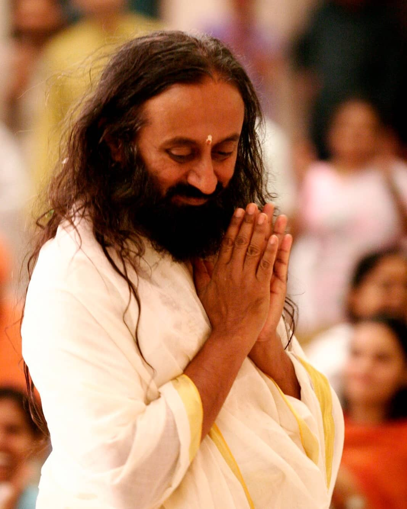

ART OF LIVING
Spreading Smiles across every one face
across globe is our main motivation
Foundation :
Founded in 1981, by H.H. Sri Sri Ravi Shankar, the Art of Living Foundation is a nonprofit 501(c)(3) educational and humanitarian organization working in consultative status with the United Nations’ Economic and Social Council on initiatives related to health, meditation, education, sustainable development, conflict resolution and disaster relief.
The Art of Living Foundation offers highly effective educational and self-development programs and tools that eliminate stress and foster deep and profound inner peace, happiness and well-being.
These programs include breathing techniques, meditation, yoga, and practical wisdom for daily living.
The Art of Living is present in 152 countries, reaching an estimated 300 million people worldwide with a vision of individual and social stewardship in society.
